Stop making the same decision twice - one source of truth for design and code.
The product grew, and the inconsistencies grew right along with it. Three designers, one button, four different versions. Engineers rebuilding the same card from scratch every single screen. The whole UI was quietly drifting apart - so I led building a living language of tokens, components and rules that design and engineering could actually trust.
Four symptoms, one root cause.
- Inconsistent look - buttons, forms and spacing looked different on every page. The app felt unprofessional and confused users.
- Slow development - engineers rebuilt the same parts over and over for every new feature, dragging out every release.
- No single guide - "primary blue" meant three different hex values depending on who you asked.
- Hard to grow - every new feature made things messier; adding new things without breaking old ones was getting genuinely difficult.
The cost wasn't just aesthetic. Every inconsistency was a decision being remade, a review comment being retyped, and a few more hours lost to rework.
“The goal was never prettier screens. It was to stop making the same decision twice.”
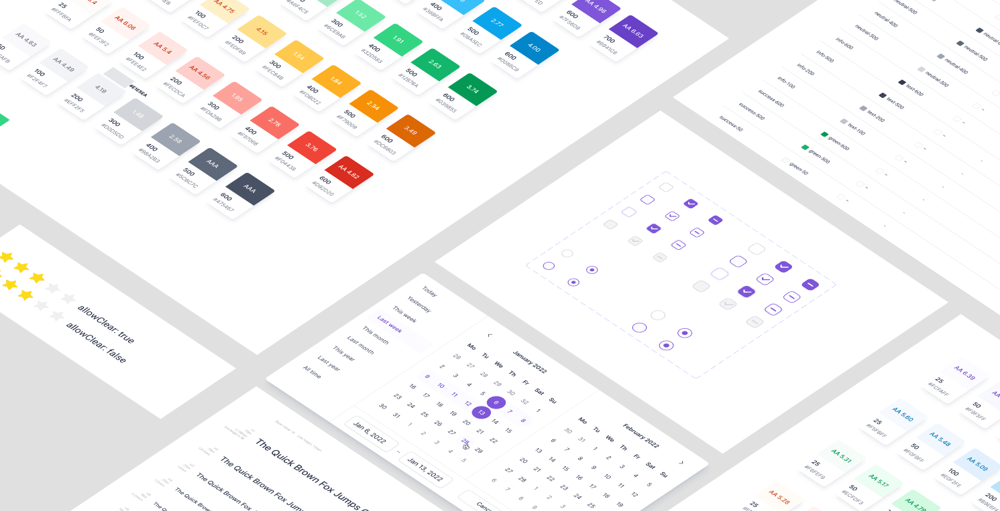
Audit first, then build in layers.
I started by indexing every screen and component in the dashboard's Figma file. The audit surfaced the usual suspects - multiple versions of the same button, duplicate inputs, a dozen greys doing the same job - and pointed exactly at where standardisation would pay off most.
Typography. One typeface, one scale. Inter was selected for its readability, modern appearance and adaptability across platforms.
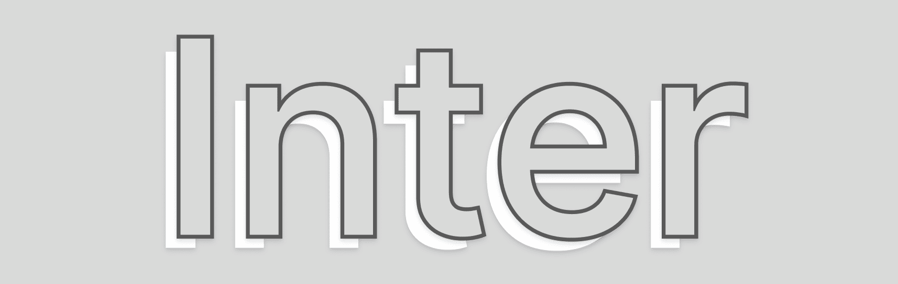
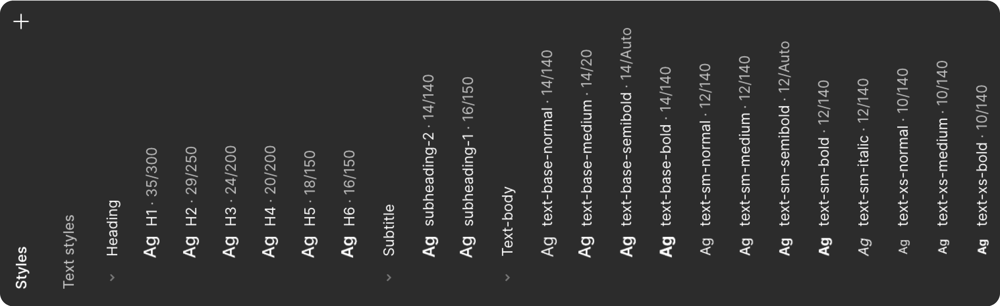
Colour, as tokens. An official brand palette plus semantic colours for success, error, warning and info - every swatch contrast-checked, all managed centrally so one edit propagates everywhere at once.
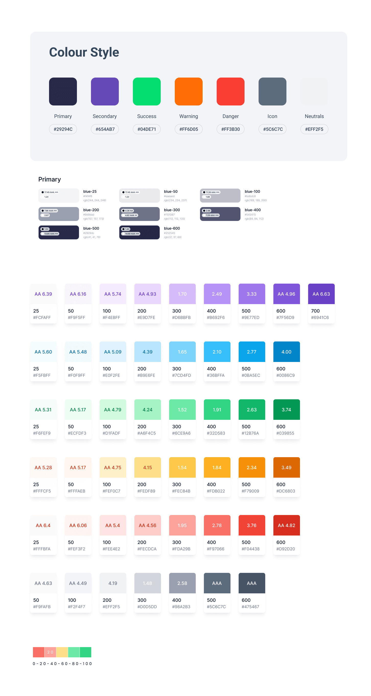
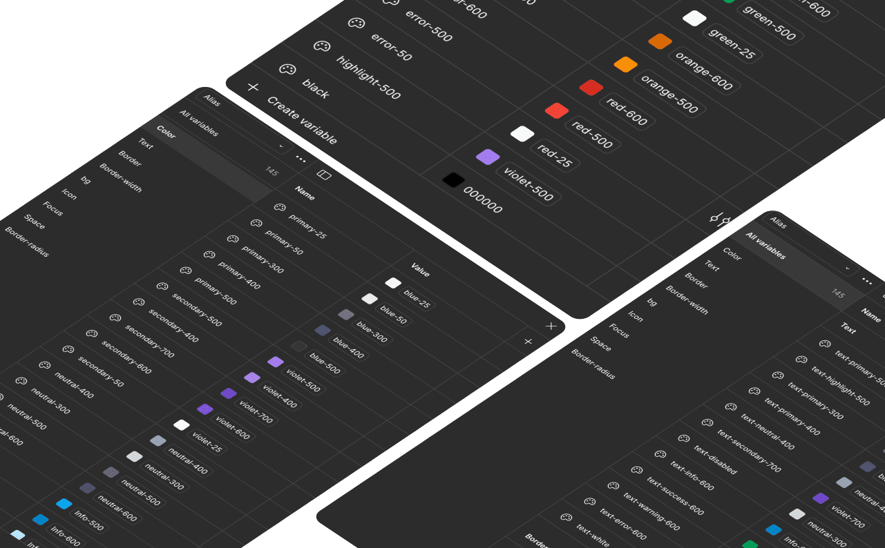
Spacing & icons. A simple spatial grid decides every distance, and one icon set is used everywhere for the same actions.
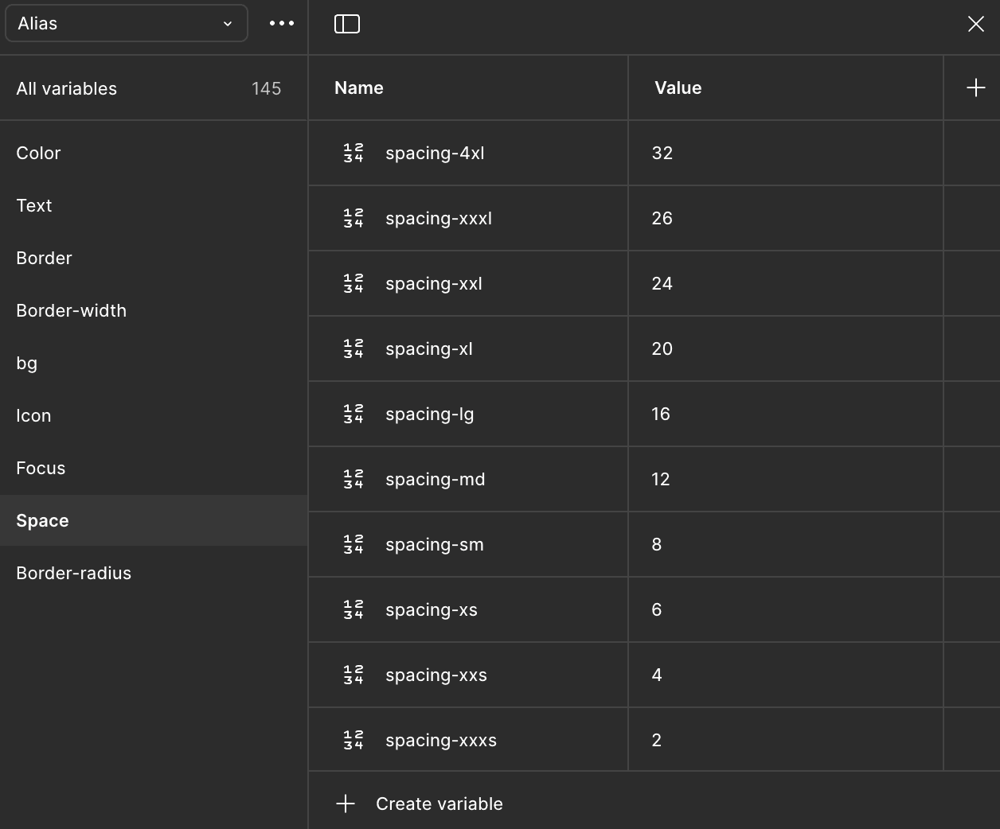
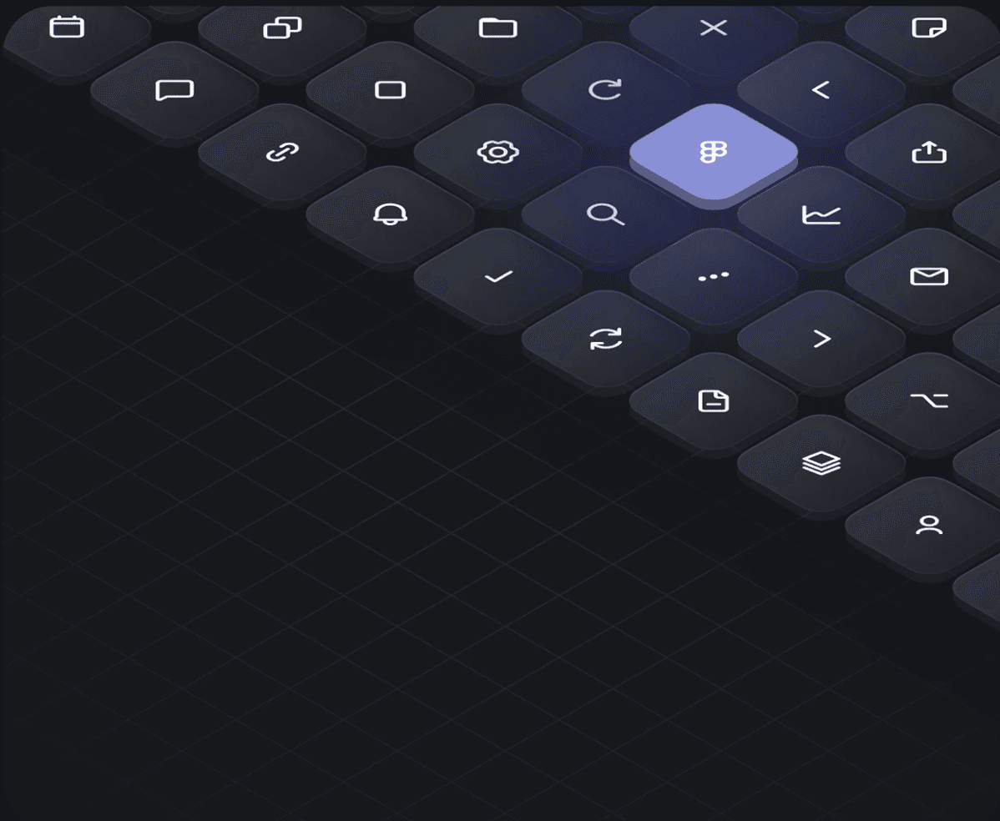
A component library the whole team could trust.
Built in Figma with nested components, properties and variants. Every component is responsive and constraint-driven, mapped with interactive states (hover, focus, disabled), and categorised clearly - forms, buttons, navigation, tables - so it's easy to browse and adapt.
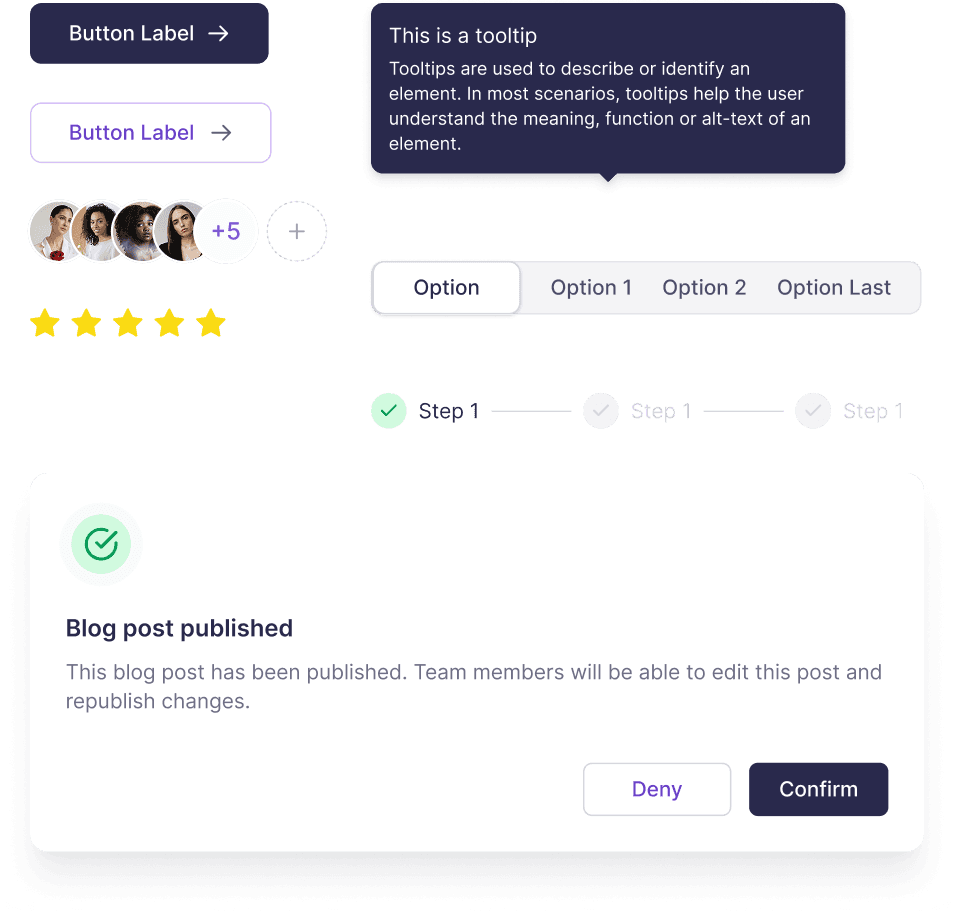
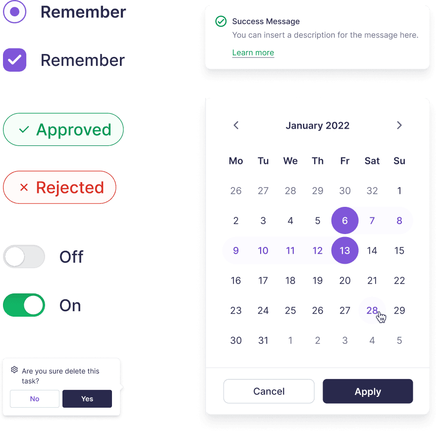
Buttons got special attention - they're the interface's verbs. A strict hierarchy so users always know the most important next step.
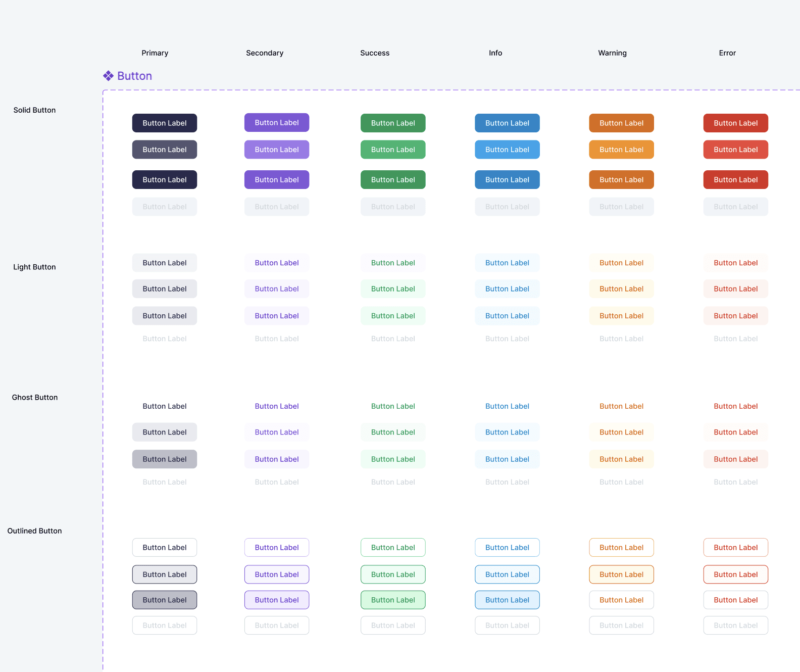
Just as important was governance: a lightweight contribution process so the system evolves with the product instead of freezing in place.
The Insights dashboard, rebuilt on the system.
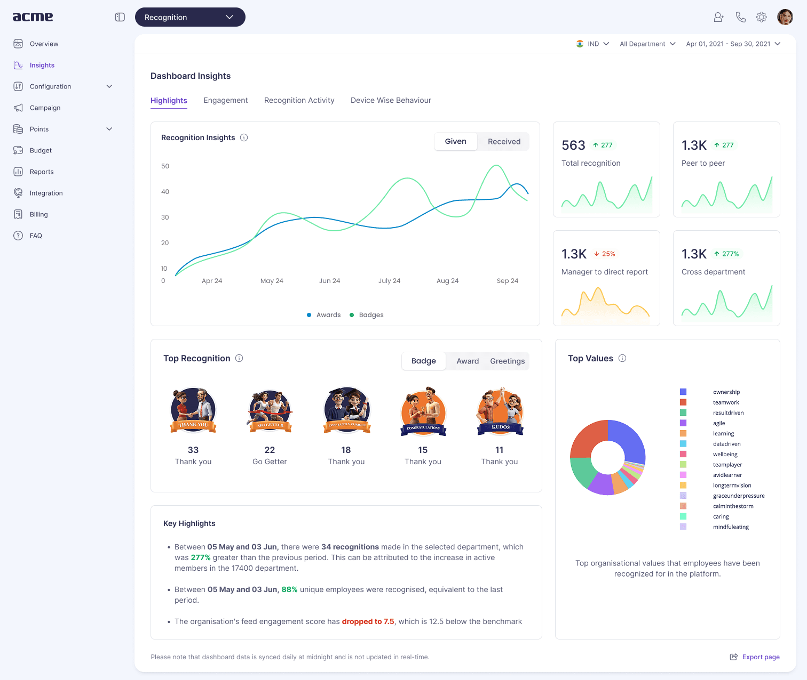
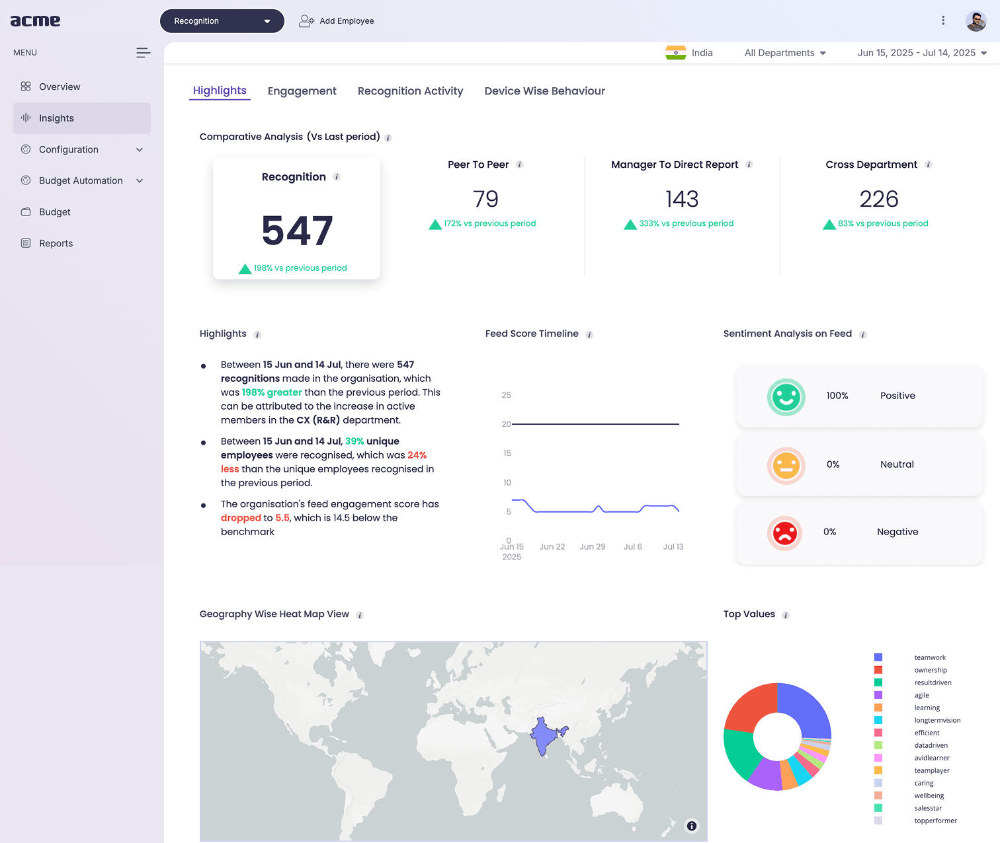
One type scale, one colour language, consistent components - trust built with modern design principles and accessibility standards intact.
The system became the default way we build.
Designers assembled screens from trusted parts instead of redrawing them; engineers implemented against a shared, documented contract.
More subtly, the conversation changed. Reviews stopped being about pixel nitpicks and started being about the actual problem we were solving.